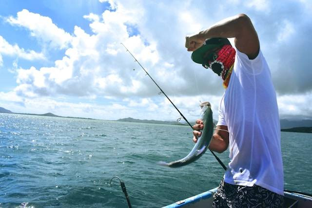

Apakah Memancing Termasuk Olahraga? Ini Jawabannya
Apakah memancing termasuk olahraga? Pertanyaan ini banyak dibahas sebagian besar masyarakat, khususnya bagi para penghobi memancing. Pasalnya, sebagian orang menganggap memancing sebagai olahraga ringan yang memiliki manfaat tertentu, khususnya bagi kesehatan tubuh.
Penjelasan Apakah Memancing Termasuk Olahraga dan Manfaatnya

Hobi merupakan salah satu kegiatan yang dianggap dapat memberi kesenangan dan hiburan bagi orang yang melakukannya. Ada banyak sekali jenis hobi yang dapat dilakukan, salah satunya adalah hobi memancing.
Dikutip dari dalam buku berjudul Ensiklopedi Olah Raga Air: Olah Raga di Atas Air yang disusun oleh Rani Siti Fitriani dkk (2021:12), memancing merupakan suatu kegiatan menangkap ikan yang bisa merupakan hobi, pekerjaan, sekaligus olahraga luar ruang. Olahraga ini dapat dilakukan di pinggir atau di tengah laut, sungai, danau dan perairan lainnya.
Tujuan dari kegiatan memancing ini adalah untuk mendapatkan target berupa ikan atau hewan air lainnya. Selain itu, memancing juga dapat dilakukan dengan tujuan untuk menghilangkan stres. Apakah memancing termasuk olahraga? Kegiatan memancing banyak dianggap sebagai olahraga ringan atau olahraga rekreasi.
Mengutip dari dalam buku berjudul Petunjuk Praktis Memancing Ikan Air Tawar yang disusun oleh Khairuman, AMd & Khairul Amri,MSi. (2003:43), memancing juga dianggap sebagai kegiatan olahraga sebab secara tidak langsung, kegiatan memancing melibatkan gerakan tubuh secara teratur.
Gerakan ini adalah gerakan yang dilakukan saat berangkat ke lokasi pemancingan, berdiri, jongkok secara berulang dan mengayunkan joran saat melempar pancing ke tengah kolam. Maka dari itu, sebagian masyarakat menganggap memancing termasuk olahraga. Dengan gerakan tersebut, tubuh menjadi lebih sehat.
Memancing termasuk ke dalam kategori olahraga dalam acara atau event khusus seperti perlombaan memancing yang diadakan oleh instansi tertentu. Memancing dianggap sebagai olahraga rekreasi karena dianggap sebagai menghilangkan stres.
Dengan stres yang berkurang berkat memancing, maka para penghobi dapat lebih produktif kembali. Dengan menjalankan hobi memancing, stres yang dialami dapat lebih mudah untuk dikelola dengan baik. Oleh sebab itu, memancing banyak disukai sebagai kegiatan hobi yang bermanfaat.